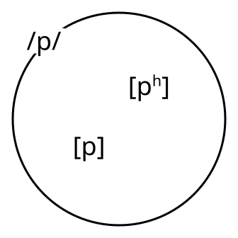
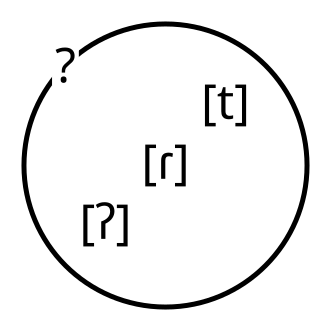
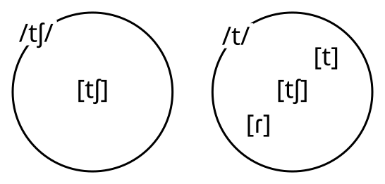
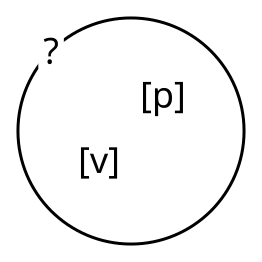

Phonemic Analysis
Dr. Josef Fruehwald
Recap: Phonetics vs Phonology
Phonetics
“pin”
[pʰɪn]
“spin”
[spɪn]
“bin”
[pɪn]
One has a long-lag VOT and the other two have short-lag VOT
Phonology
“pin”
/pɪn/
“spin”
/spɪn/
“bin”
/bɪn/
The first two are allophones of /p/, and the third is an allophone of /b/
Recap: Phoneme
Phoneme: A label for a set of sounds that all count as basically the same.
The phoneme /p/ has at least two allophones, [p] and [pʰ]
Recap: Diagnostics
Minimal Pairs
If there are at least two words that are differentiated by just these two sounds, they are contrastive.
English
[d]
“dough”
doʊ
“den”
dɛn
[ð]
“though”
ðoʊ
“then”
ðɛn
Recap: Diagnostics
Complementary Distribution
If two sounds never appear in the same position, they are probably allophonic
Spanish
Word initial
lady
“dama”
dɑmɑ
Elsewhere
side
“lado”
lɑðo
Recap: Diagnostics
English:

Spanish:

Phonemic Analysis
What is the underlying form?
sit
sɪt
sitting
sɪɾɪŋ
sittin’
sɪʔn̩

Phonemic Analysis
What is the underlying form?
Choice of the underlying form here will indicate our thought about whether the phoneme is
Voiced or Voiceless
A Stop or a Flap
Coronal or Non-Coronal

Phonemic Analysis
What is the underlying form?
Which form shows up as the default?
") #diagram( node-stroke: 1pt, node-corner-radius: 3p">
Phonemic Analysis
What is the underlying form?
Which form shows up as the default?
") #diagram( node-stroke: 1pt, node-corner-radius: 3p">
Phonemic Analysis
What is the underlying form?
| lif | leaf |
| lup | loop |
| lɛd | lead |
| leɪm | lame |
| bleɪm | blame |
| fiɫ | feel |
| puɫ | pool |
| dɛɫ | dell |
| meɪɫ | |
| hɛɫp | help |
Phonemic Analysis
Neither onsets nor codas are more “basic”
") #diagram( node-stroke: 1pt, node-corner-radius: 3p">
Neutralization
| bɛt | bet |
| pæt | pat |
| ɹəsaɪt | recite |
| bɛd | bed |
| pæd | pad |
| bɹaɪd | bride |
| bɛɾɪŋ | betting |
| pæɾɪŋ | patting |
| ɹəsaɪɾɫ̩ | recital |
| bɛɾɪŋ | bedding |
| pæɾɪŋ | padding |
| bɹaɪɾɫ̩ | bridal |
Neutralization

Neutralization - Consequences
What evidence could you come up with for the underlying forms of these words?
| taɪɾl̩ | tidal |
| vaɪɾl̩ | vital |
| taɪɾl̩ | title |
| spaɪɾɹ̩ | spider |
Neutralization
| bɛt | bet |
| bɛtʃju | bet you |
| bætʃ | batch |
| lɛd | lead |
| lɛdʒju | lead you |
| lɛdʒ | ledge |
Neutralization

Abstractness
| ʃvovɪç | Schwowisch (a German dialect) |
| ʃvop | a speaker of Schwowisch |

Abstractness
| ʃvovɪç | Schwowisch (a German dialect) |
| ʃvop | a speaker of Schwowisch |
") #diagram( node-stroke: 1pt, node-corner-radius: 3p">
Abstractness
| ʃvovɪç | Schwowisch (a German dialect) |
| ʃvop | a speaker of Schwowisch |
") #diagram( node-stroke: 1pt, node-corner-radius: 3p">